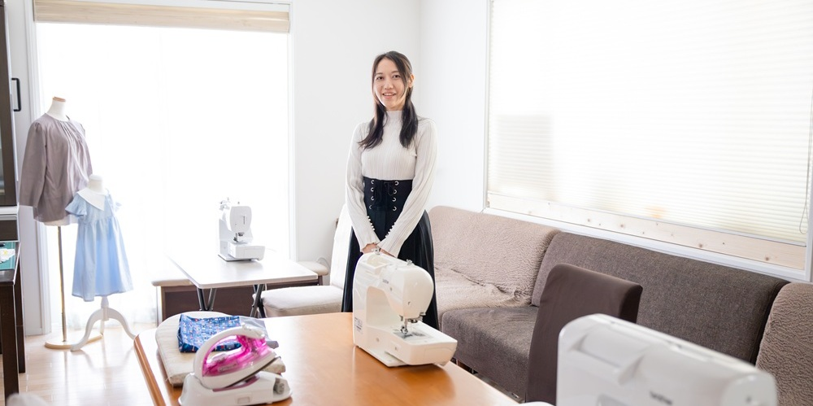

好きなことに熱中できる時間
つくば市内の手芸・洋裁教室
ピウスアトリエへようこそ

あなたの「作りたい」を形に
明るい教室と適切な機材、豊富な素材を備えた環境で、皆様の創造力を全力でサポートいたします。
あなたの「やりたい」を叶える
ミシンや各種道具を完備しておりますので、手ぶらでお気軽にお越しいただけます。もちろん、お好きな機材や素材のお持ち込みも大歓迎です。
洋裁って難しい？？
充実した設備と環境
ミシンや各種道具を完備しております。手ぶらでお気軽にお越しいただけます。
5人までの少人数制
おひとりおひとりのペースに合わせて丁寧にサポートいたします。
様々な難易度の作品作り
簡単な作品であればその日のうちにお持ち帰りいただけます。制作途中の作品はお預かりすることも可能です。
まずは雰囲気を知るところから！
体験レッスンでお試しいただけます。1,500円／回（材料費込み, 60分）でポーチ作りや巾着作りなどからお選びいただけます。詳しくはご予約とご相談ページをご覧ください。よくあるご質問
Q. 持ち物は必要ですか？
特に必要なものはありません。ミシンや道具は教室にあるものをお使いいただけますし、生地はお好みのものをお持ちいただいても、教室の在庫からご購入いただいても、どちらも可能です。ミシンのご持参ももちろんOKです。
Q. 幼稚園児でも始められますか？
お気軽にご相談ください。年長さんは簡単なものから作れる子も多いです。より小さなお子様のご参加には、同時間帯に既に予約している小さなお子様が居ない、保護者の方が同席する、一般的なハサミが使えることが目安となります。
Q. 友達同士・兄弟姉妹で予約してもいいですか？
もちろん問題ありません。他の生徒さんが居る場合もあるため、ご迷惑にならないようにお気をつけください。
Q. 未就学児の子連れでもいいですか？
もちろん問題ありません。ちょっとしたおもちゃの貸し出しや、毛布や座布団の貸し出しもご相談いただけます。
Q. 車椅子でも大丈夫ですか？
お気軽にご相談ください。駐車場から玄関まではスロープがあります。玄関から室内に段差があります。お手伝いが必要なところをご相談ください。
Q. 保護者は同席できますか？
もちろん問題ありません。様子を見れるソファでお待ちいただけます。車でお越しの際は駐車場に限りがあるため、あらかじめご確認ください。